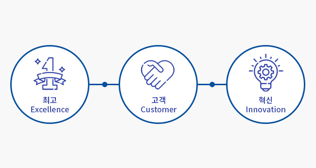
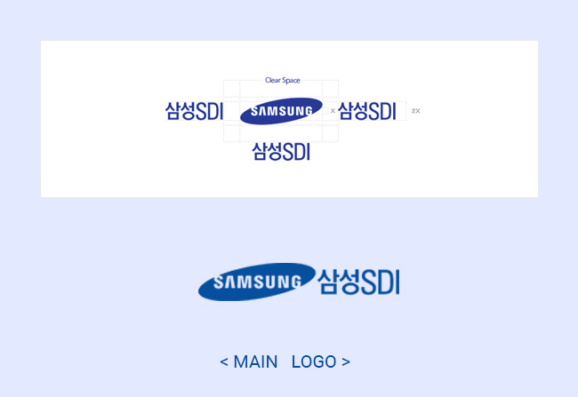

기업소개
이차전지 및 전자재료 제조
전문기업 삼성SDI입니다.
변화와 혁신을 바탕으로 기술과 시장을 선도하는 창조적인 리더가 되겠습니다.
핵심가치
최고 수준의 기술과 인재를 통합한 최고의 품질가치 창출, 고객을 위한 제품의 편의성과 실용성을 보다 더 강화, 혁신을 위한 도전과 변신을 거듭한 끊임없는 기술연구&개발
로고
워드마크의 디자인은 유연성과 단순함을 강조하고 있으며 우주와 세계 무대를 상징하는 타원을 비스듬하게 처리하여 동적이고 혁신적인 이미지를 나타내고자 했습니다. S자와 G자의 터진 부분을 통해 내부와 외부의 기운이 통하게 함으로써 세계와 호흡하고 인류사회에 이바지하려는 의지를 담았습니다.
연구개발
삼성SDI는 배터리연구소와 전자재료사업부가 나란히 삼성 전자소재연구단지에 입주해 공동 R&D 시너지를 창출하고 있습니다. 앞으로 에너지 미래사업 중심 구조에 소재 기술과 역량을 더하여 글로벌 기술 리더십을 확보하기 위해 노력하겠습니다.